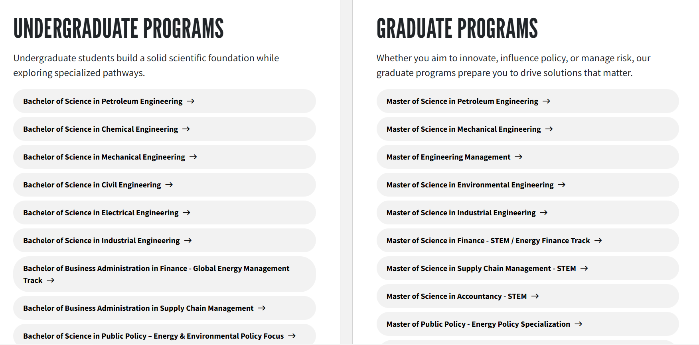
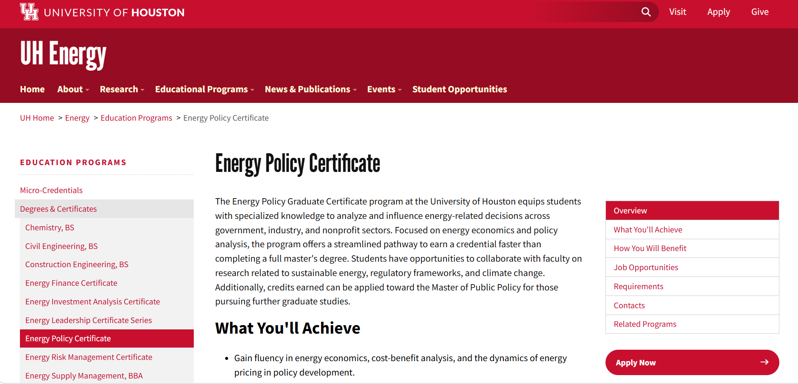
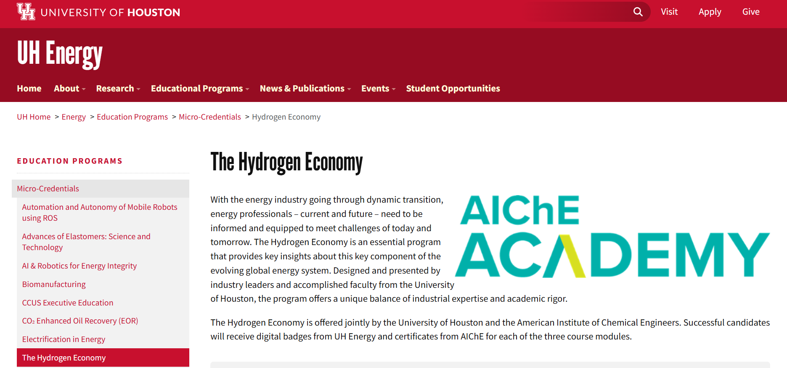

UH Energy Website
Transformed complex energy education content into a clearer, more consistent, and easier-to-navigate university web experience.
Impact First
I helped modernize how UH Energy presents educational programs, credentials, and professional learning online
UH Energy served several audiences at once: prospective undergraduate students, graduate students, working professionals, researchers, and people exploring energy careers. Each audience arrived with different questions, but the existing content was dense, inconsistent, and spread across program pages, credential descriptions, and older site structures. My work focused on translating that complexity into clearer page hierarchy, cleaner navigation pathways, and more maintainable content inside the university web system.
Content Design
Turned technical and academic information into clearer page sections, headings, lists, and calls to action.
Information Architecture
Helped organize degrees, graduate programs, certificates, and micro-credentials into more predictable pathways.
Publishing Quality
Reviewed links, formatting, metadata, accessibility elements, and publication readiness before pages went live.
How might we make UH Energy's educational opportunities easier to discover, understand, and act on while preserving academic accuracy and University of Houston standards?
Context
UH Energy represented a broad academic and professional ecosystem
The education portfolio included undergraduate degrees, graduate programs, certificates, micro-credentials, and professional learning opportunities across engineering, energy finance, public policy, supply chain management, sustainability, risk management, hydrogen, robotics, carbon management, and emerging energy technologies. The website needed to represent all of those options without feeling like an unstructured catalog.

Problem
The challenge was not a lack of information. It was making the information coherent.
Legacy pages did not always follow the same heading structure, navigation model, link format, image treatment, or call-to-action pattern. Some pages led with institutional background. Others jumped into requirements. Some relied on long paragraphs, while others used fragmented lists or external links. A literal content transfer would have preserved those inconsistencies in a newer template.
I treated each page as a user decision path: what does this audience need to know first, what supports credibility, and what should they do next?
Inconsistent Hierarchy
Users had to work harder because similar program pages did not always present information in the same order.
Dense Technical Copy
Energy education content often included complex program language that needed clearer scanning and grouping.
Unclear Next Steps
Pages needed stronger pathways into related programs, requirements, contacts, and application actions.
Scope
I worked inside an established university system, which meant clarity had to fit institutional constraints
I did not own UH Energy's entire strategy, content library, or university design system. My role was to translate existing and approved information into functioning website experiences using university standards. That meant reorganizing content without changing official program requirements, improving readability without weakening academic accuracy, and using approved templates instead of inventing a separate visual system.
Content Translation
Reviewed legacy information and shaped it into clearer sections, scannable copy, and page components.
CMS Implementation
Built and formatted assigned web pages using the university's approved content management workflow.
Accuracy
Maintained official program names, requirements, stakeholder-approved content, and publishing standards.
Audience Needs
I organized the site around different decision journeys
A prospective undergraduate student might compare degree pathways and ask which college owns a program. A graduate student might compare research, policy, management, or finance tracks. A working professional might look for a short credential in hydrogen, energy policy, or risk management. The site needed to help each group quickly identify whether a page matched their intent.

Discover Pathways
Needed to understand which energy-related degrees existed and where to continue for admissions or degree details.
Compare Programs
Needed to distinguish certificates, master's degrees, policy paths, engineering tracks, and career relevance.
Find Credentials
Needed short, direct explanations of micro-credentials, partner programs, outcomes, and how to enroll.
Information Architecture
I helped make program discovery feel more predictable
The strongest UX opportunity was consistency. Program pages needed to answer similar questions in similar places: what the program is, who it is for, what users will learn, requirements, benefits, related programs, and next steps. I supported page structures that made dense academic content easier to compare and easier for the UH Energy team to maintain after publication.
Group Similar Content
Separated undergraduate programs, graduate programs, certificates, and micro-credentials into clearer discovery paths.
Make CTAs Visible
Supported clear action points like apply, visit, contact, or continue into related programs.
Preserve Context
Kept institutional context available while reducing the amount of reading required before users could orient themselves.
Implementation
I rebuilt and reviewed pages as production web experiences, not just migrated documents
The production work included formatting copy, placing images, reviewing headings, checking links, verifying navigation, supporting SEO and accessibility expectations, and preparing pages for managerial review. Because UH Energy content had many stakeholders and program-specific requirements, the work required careful quality control before publication.

Page Buildout
Implemented assigned pages in the university web environment using approved templates and components.
Findability
Supported page titles, metadata expectations, headings, and content structure that helped users and search engines understand each page.
Pre-Publish Review
Checked formatting, links, navigation consistency, accessibility basics, and page readiness before submission.
Design Decisions
The work centered on making dense institutional content feel easier to scan
I used the university's existing visual language while improving how users moved through information. The main design decisions were practical: clearer section order, stronger headings, repeated program patterns, simpler link paths, and more scannable blocks of content. This made the experience feel less like a static archive and more like a guided education pathway.
Lead With Meaning
Moved important context and user-facing explanations higher so visitors could quickly confirm page relevance.
Support Cross-Discovery
Used related links and sidebar patterns to help users move between certificates, micro-credentials, and programs.
Repeatable Patterns
Favored structures the team could reuse instead of one-off layouts that would become harder to maintain.
Impact
Clearer Program Discovery
Helped users move through undergraduate, graduate, certificate, and micro-credential information with less ambiguity.
More Consistent Pages
Supported reusable page patterns for headings, content sections, related links, and calls to action.
Publication-Ready Content
Improved formatting, navigation, link quality, accessibility basics, and review readiness before pages went live.
Reflection
This project taught me how product thinking applies to content-heavy systems
UH Energy strengthened my ability to work inside real institutional constraints while still improving user experience. The biggest product lesson was that clarity is often an operational outcome: better structure, cleaner pathways, consistent patterns, and careful QA can make a complex system feel easier to use without changing the underlying institution. I learned how to balance stakeholder accuracy with user comprehension, which is exactly the kind of tradeoff product managers make every day.